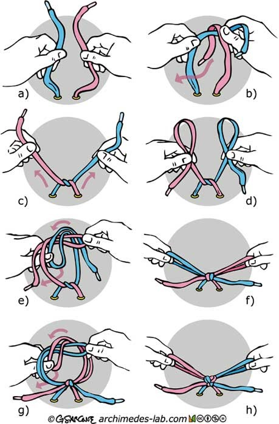

How to tie a shoe: step by step instructions

- Take both laces,
- And thread one lace over the other.
- Then pull them tight. They should form a knot in the middle of the shoe.
- Make a bunny ear with each loop. (You should be holding the lace between your thumb and your first one or two fingers).
- Tie a knot by placing one bunny ear loop over the other, then tuck it behind and thread it through the hole.
- Pull tight.
- Repeat this step again to double knot your shoe.
- Pull tight and you are done!